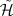
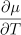
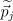
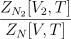
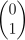
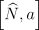
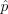
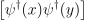
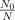

(I) THU
29/09/2022
In thermodynamics there are extensive quantities, that grows with the system size, and
intensive quantities, which does not. Conjugation between them, means tuning intensive
variables to make extensive one change.
Note that we always refer to quasi-static transformations
0th Law Equilibrium (empirical) temperature.
We call: A : space of state of A B : space of state of B.
The total phase space is A ×B = {(a,b)}, where (a,b) denotes all possible
couples.
At equilibrium, not all couples are possible. At equilibrium:
so there is a constraint. This is an equivalence relation:
This condition define the empirical temperature tA = tB at equilibrium.
The transitive property allow us to choose anything as a measure (e.g. thermometer).
1st Law Internal energy E
There is an internal energy, which can change in different ways, but it always conserved (conservation of energy).
where δQ is heat, δ is work, N is number of particles and μ is the chemical potential:
the energy needed to add/remove a particle.
d means that ∮
dE = 0 on any cycle, so the integral does not depend on the path. δ
no, so δQ,δ is not necessary 0.
E.g. Classical fluids:
δ = pdV : the work derive from the compression/expansion. So the variation of the energy:
dE = δQ - pdV + μdN.
2nd Law Entropy S
In a reversible process:
Putting the two laws together,
So, a system evolves towards the maximum of entropy
3rd Law For any isothermal process, ΔS0
Let’s see the relation between these quantities:
Internal energy dE = TdS - pdV + μdN
The internal energy can be changed by changing S,V,N so E = E(S,V,N) and:
All terms in couple are conjugate variables: T ↔ S,p ↔ V,μ ↔ N
E,S,V,N are extensive variables, so if
where λ is a scaling factor.
So:
Homogeneous function of degree 1 (linear)
That requires: E(S,V,N) = TS - pV + μN dE = TdS - pdV + μdN
Usually it’s easier to work with T then S (there are no experiment where you can tune the entropy S), so thermodynamic potentials are introduced. These are other function which are more convenient to work with:
Internal energy:
E(S,V,N) = TS - pV + μN dE = TdS - pdV + μdN
Helmotz free energy:
F(T,V,N) = E - TS = -pV + μN dF = -SdT - pdV + μdN
Entalpy:
H(S,p,N) = E + pV = ST + μN dH = TdS + V dp + μdN
Gibbs free energy:
G(T,p,V ) = E - TS + pV = μN dG = -SdT + V dp + μdN
Granpotential:
Ω(T,V,μ) = E - TS - μN = -pV dΩ = -SdT - pdV - Ndμ
N,V →∞ with n = N∕V fixed In this limit, all the thermodynamic potential diverges, so (e.g) E has no meaning. What we can calculate is the ratio with the number of particle (e.g E∕N : internal energy for particle). Things do not change because they depend on N, except for Ω which doesn’t.
From the granpotential, one can derive p = -, which, written for a particular model (e.g. classical gas) gives the equation of state of the system/model.
Also, the μ-n relation is very important: N = -
(II) MON
03/10/2022
Suppose we set up an experiment in which S,V,N are constant. Then dE = 0, which implies
that the system evolves towards the minimum of energy E.
The same happen if T,V,N are constant, in which case dF = 0, so the system evolves
towards the minimum of Helmotz free energy. Etc... .
So the problem becomes a problem of minimization.
We’ll see that the minimization of F and Ω are the most important.
For reversible processes, dF = -SdT + pdV + μdN, from which:
The minimum is found with the hessian matrix:
In fact, the condition to have a minimum is that all the 3 eigenvalues of the hessian matrix should be > 0.
That is the same as saying that going in every direction the ”gradient” increase
We won’t prove this, but because of the way F = F(T,V,N), it us sufficient that
The same can be done changing the variables and it also works with other different from F (e.g. E etc.)
To represent a classical system we need:
1) Coordinates: position q, momenta p.
For 1 particle. If a particle lives in IRd ∈ IRd ∈ IRd.
So the phase space 1 is {(q,p)}∈ IRd × Rd = 2IRd
For N particles living in IRd, the phase space is:
2) Observable: An observable is given by a smooth real function from the phase space to a real number.
e.g. , angular momentum, kinetic energy T are all observables
3) Measure: (ideal, without errors) A measure of an observable on a state (ii) is given
by the value of the function at that particular point: f(1,1)
4) Evolution: The evolution of a system is fixed by a special observable, called Hamiltonian , through Hamilton’s equation of motion:
| (1.1) |
In general, = (qi,pi,t), but we only study the case where the hamiltonian is
time-independent.
The equation 1.1 are equation of the first order in t (qi(t)pi(t)), so the solution is uniquely fixed by the initial conditions (i,i). Because of that we have two theorems:
Conservation of volumes (even id the shape is changed). Since each point of the phase space is a state, the volume counts the number of states. In other words, giving a volume is the same as giving a subset.
Conservation of energy. If does not depend explicitly on time, the hamiltonian is constant for each curve of motion:
We will call one of these states (qi(t),pi(t)) a microstate at time t. Fixing an initial microstate, completely determine the trajectory in phase space, backward and forward in time.
If the initial conditions are changed a little, allowing the system to ”choose” them between a given set, we enter the field of complex systems
In general, there is a (huge) number of possible microstates corresponding to the same macroscopic set of thermodynamic variables (the macrostate).
In order to study this, we can think of having an ensemble: a large number of copies of the system, all with the same Macroscopic State but with different microscopic realizations.
Given an ensemble, in the limit in which the number of copies becomes very large, we can construct the probability with which, at a fixed time, a given microstate {qi(t),pi(t)} appears, thus recovering a probability density distribution on N:
Which is:
Positive: ρ(pi(t),pi(t)) ≥ 0
Normalized:
(implicit vector used: dqi,dpi should be d3 i,d3 i)
For a subset U ⊂ N, the probability to find the system in the subset U is: ∫ Uρ(qi,pi)dΓ
To have an a-dimensional quantity, we replace:
where h is a constant with the dimension of an action (here we don’t say anything about it, it’s just the dimension of a little state of sides dqi,dpi but in quantum mechanics, it will be Plank’s constant).
The conservation of volumes is the Liouville’s theorem.
Given a region Ω0 in which there is some density probability ρ(qi,pi) ∈ Ω0, there is a density
current of particles moving out of Ω0:
If there is a conservation of the total probability density: + ( ) = 0 That means
which is the Liouville’s theorem
We can also use the Poisson’s bracket’s to write (ρ) = {ρ,},
reminding that {f,g} = ∑
i
Definition: A system is called stationary iff = 0. Stationarity is a necessary condition for equilibrium: = 0, which is what we want to study. From the previous condition follows that at equilibrium: {ρ,} = 0 which can happen if
giving, respectively, the cases of the microcanonical and canonical/grancanonical distributions.
Definition: Given an observable f, we can define its:
| average | ⟨f⟩ρ = ∫ Nf(qi,pi)ρ(qi,pi) | ||
| standard deviation | (Δt)2 = ⟨f2⟩ ρ - (⟨f⟩ρ)2 |
The subscript ρ, indicates that we need to have defined a probability density distribution, to evaluate these two.

For time-independent hamiltonians, the energy is conserved. That means that all the trajectories will be on a (2M - 1)hypersurface in the phase space (where M is the total number of degree of freedom). The whole space can thus be foliated into different sheets according to different energies like in the figure.
So we can compute every integrals integrating firstly over an hypersurface of constant energy and then over all the possible energies:
Definition: Volume (~ number of state) in phase space with energy lower than a certain value (0 ≤(qi,pi) ≤ E):
Definition: The density of state is the ”area” of the hypersurface S
Σ,ω aren’t property of the space, but they depends on because the surfaces depend on
.
In the case of time-independent hamiltonians:
| E ≡ ∫ SEdSEf | |||
| time average | ∞ ≡ lim T→∞∫ t0t0+T dtf(q i(t),pi(t)) |
the latter exists for almost all initial conditions and it is independent of t0
Definition: A system is said to be ergodic over the surface SE iff almost all points (qi,pi) ∈ SE pass through a neighbourhood U ∈ SE during the evolution. In other words, starting from any point, if you let the system evolve for a long time, every region will be explored.
Theorem: A system is ergodic iff, for almost all initial points: ∞ = E
This tell that the time spent on a region is proportional to the area of that region.
In the following we will consider only ergodic systems.
06/10/2022
Recap:
Phase space N = {(qi,pi) i = 1…N}
Hamiltonian (qi,pi) : N → IR
To describe the system we need the probability distribution of the microcanonical
ensemble. We assume (a priori) a uniform probability:
Definition: The probability distribution of the microcanonical ensemble is:
where C is a constant we can obtain from the normalization:
(reminding that ω(E) is the area of S = E). So:
| (2.1) |
Working with S is difficult (e.g. it creates some problems when integrating), so we give an operative definition. We can write the volume of a phase space:
from which,
So we can see that the microcanonical probability density function (2.1) is the limit for ΔE → 0 of:
We will see that it coincide with the thermodynamic entropy.
1) We could actually define the entropy in three different ways:
which in general are different quantities. However in the thermodynamic limit (N,V →∞, with n = N∕V const), they represent the same quantity:
So while doing calculations, we can use one of the three.
2) Entropy should be extensive, so it should be additive: SmcA + S
mcB = S
mcA∪B
Proof: To prove it, let’s call the phase space of the two systems:
1,2. So AB = 1 ×2
If = 1 + 2 E = E1 + E2 + Eint.
Here we make an assumption: there could be interactions in the wall that divides the two
systems, however, since E1 and E2 both scale with the volume (L3) while E
int scale like the
area of interaction (L2), we neglect the interaction term, because it disappears in the
thermodynamic limit.
We can foliate the phase space with surfaces each at different energy
| ω(E) | = ∫ 1×2dΓδ(- E) | ||
| = δ(1 + 2 - E) | |||
| = ∫ d1 ∫ d2δ(1 + 2 - E) ∫ 1=E1ds1 ∫ 2=E2dS2 | |||
| = ∫ d1 ∫ d2δ(1 + 2 - E) ω1(E1) ω2(E2) | |||
| = ∫ 0EdE 1 ω1(E1) ω2(E2 = E - E1) |
The integrand is ≥ 0 and defined in a compact interval [0,E), so it has a maximum. Let E1*,E 2* = E - E 1* be the value of energy for which the integrand is maximum. So:
and for ΔE small enough:
Reminding that Γ(E) ~ ω(E)Δ(E):
| Γ1(E1*)Γ 2(E2*) ≤ Γ(E) | ≤Γ1(E1*)Γ 2(E2*) | ||
| log Γ1 + log Γ2 ≤ log Γ | ≤ log Γ1 + log Γ2 + log (×kB) | ||
| Smc1 + S mc2 ≤ S mc | ≤ Smc1 + S mc2 + k B log | ||
In the thermodynamic limit, dividing everything by N and letting N →∞, the last term approaches zero and can be neglected. So we find:
____________________________________________________________________________________
3) In the thermodynamic limit, this entropy coincides with the thermodynamic entropy: smc = sth
Proof: At equilibrium, E = E1* + E 2*, where ω 1(E1) ω2(E - E1) is maximized.
| Γ(E1*)Γ(E 2*) → dE1=E1*,E2=E2* | = 0 | ||
| E 1*,E2* | = 0 | ||
| (dE2 → dE1) |
| E 1* | = E 2* | ||
| E 1* | = E 2* | ||
| E 1* | = E 2* | ||
since this is calculated at E1*,E 2*, it is calculated at the equilibrium (N,V fixed).
The same thing happens in thermodynamic: if T1 = T2,
So the equilibrium in thermodynamics requires this condition:
So we find that:
(equal and not only proportional, because kB is the constant appositely chosen to make them equal)
____________________________________________________________________________________
4) We saw that
We can now prove the Universal Boltzmann’s formula (works in the TD-limit):
Proof: Working from the Universal Boltzmann’s formula, we can arrive to the definition of entropy
| - kBmc | = -kB ∫ NdΓ(log ρmc)ρmc ρmc = δ(- E) ρmc|Sc = | ||
| = -kB ∫ SE(- log ω(E)) | |||
| = kB log ω(E) ∫ SdSE | |||
| = kB log ω(E) = Smc |
So we have proved that, in the TD-limit:

We consider a gas of N non-relativistic and non-interacting monoatomic particles in 3D, confined in a volume V .
The volume of states is:
where the integral is calculated on:
So it is the volume of a 3N-dimensional sphere of radius . So:
| Σ(E) | = N ∫ 0≤∑ i2≤2mE ∏ i i2 | ||
| = Ω3N(R = ) | |||
| = (R = )3N |
where Γ(x) = ∫
0∞dt tx-1e-t is the Euler’s Γ-function, which can be seen as a
generalization of the factorial. In fact, one can prove (integrating by parts) that
Γ(n) = (n - 1)! Γ(x + 1) = xΓ(x) log Γ(x) ≃ x log x - x
The previous formula is composed by an angular part (the Euler’s Γ-function) and a radial part (which scale with 3N). So finally we have that:
Calculating the derivative, one can also get the density of the states and dΓ:
and we can check that in the TD-limit, the different ways of defining the entropy are the same:
where the terms can be cancelled in the limit of N →∞ (for the last one, since E ~ N,
the ratio 3N∕2E is constant).
We can then find the entropy for a perfect gas (supposing distinguishable particle)
| Sdis | = kB log Σ(E) | |||||
| = kB | (TD - limit) | |||||
| = kB | (Stirling) | |||||
| = kB | ||||||
(III) MON
10/10/2022
This formula has a problem: it is not extensive: if N → 2N and V → 2V we expect S → 2S,
but we actually have S → 2S + N log 2.
The solution is to consider indistinguishable particles. That means that the states:
(q1,p1,q2,p2,…,qn,pn) (q2,p2,q1,p1,…,qn,pn)
which are different points in the phase space N, should be counted only once. We have N!
of this equivalent vectors, so Σ(E) → Σ(E)∕N!, and we get:
| Sind | = kB log | ||
| = kB | |||
| = kB | (2.2) |
which is an extensive quantity.
So for an ideal gas in 3D microcanonical we have:
| dΩ | = ∏ i=1N | distinguishable particles | ||||
| dΩ | = ∏ i=1N | indistinguishable particles |
From the entropy, knowing that TdS = dE + pdV - μdN, we can get:
| (2.3) |
(where the 3 stands for the number of dimension)
Substituting 2.3 in 2.2 we get:
where we have defined the thermal wavelength λT and the average inter-particle distance d as:
These formulas have a problem: it might happen that for low temperature T,d λT ,S < 0 !. So something break down when d ~ λT , but there will be a quantum mechanical solution. However, what we have found is true until d > λT , otherwise we have interaction effects.
| System | = {(qi(1),p i(1))}, V 1 ≪ V 2, N1 ≪ N2 | ||
| Environment | ε = {(qi(2),p i(2)}, V 2,N2 |
We have a system and an environment with a wall in between them that permits heat and energy to pass but not particles. Energy is exchanged, but the total energy E ≡ E1 + E2 = const. (with E1 ≪ E), so that the universe = ∪ ε is microcanonical.
The phase space is = 1 ×2 and:
The whole universe is described with a microcanonical probability distribution function, and the (canonical) probability distribution describing the system only is obtained by integrating out the environment d.o.f. So:
ρc( ) ) | ∝∫ ρmc( )dΩ2 δ is selecting only the surface with E2 = E - E1 | ||
| = ∫ E2=E-E1dΩ2 | |||
| = |
So ρc()~ ω2(E2 = E - E1) and we know that S = kB log ω, so:
| log ρc ~ log ω2(E2) | ~ S2(E2 = E - E1) | ||
| (E1 ≪ E) | ≃ S2(E) + E 2=E(-E1) + … | ||
| = S2(E) - |
since the first term is a constant.
We can see that it depends only on the system (E1). Defining β = 1∕kBT:
We have eliminated the environment, so we will avoid writing the subscript (1) from now on:
where he have defined the canonical partition function ZN, which can be determined with the normalization:
ZN = ZN(T,V ) depends on N,T,V .
This expression is valid for distinguishable particles. For indistinguishable particles there is a 1∕N! factor. For simplicity we write:
Using the fact that we can foliate the phase space, we can write (assuming the lowest bound to be 0):
In systems with a discrete set of energies values Ej: ZN = ∑
je-βϵjg
j
1) For more species A,B,… of particles, we can assume that there is no interaction among different species: = A + B. So:
| ZN | = ∫ dΩAdΩB… e-β(A+B+… ) | ||
| = … | |||
| = ZNAAZ NBB… |
So if the species are distinguishable and independent one from the others (not
interacting), the partition function is the product of the partition function of all the
species.
2) Given an observable f(qi,pi), the canonical average is:
We recover the thermodynamic potentials, by defining:
1)
2)
Proof: We can see that both ZN (microscopic description) and F (macroscopic) depend on N,V,T. This leads us to think that it must be related, We will see that: ZN = e-βF F = - log Z
Differentiating both sizes :
As an exercise, since β = β = -T
While in thermodynamic we have Fth = Eth - TS S = -V,N.
These two expressions are the same if we identify:
____________________________________________________________________________________
A useful formula in exercises:
3) We saw the universal Boltzmann’s formula in the microcanonical. In the canonical it is the same (that’s why it’s called universal):
Proof:
| - kBc | = -kB ∫ dΩρc log ρc | ||
| = -kB ∫ dΩ(-β- log Z) | |||
| = kB | |||
= kB![[ ]
1
----⟨H ⟩c + log Z
kBT](m_statistical_mechanics157x.svg) | |||
| = = S |
Theorem: Let ξ1 ∈ [a,b] denote one of the canonical coordinates (q) or momenta (p) and ξj ; (j≠1) all other variables. Suppose that the following condition holds:
Then:
Proof:

But we can write the differential dξ1 =  ∂ξ1 :
∂ξ1 :
So we obtain:
1 = ∫
dξ1 + ∫
 ξ1 ξ1 |
And from the hypothesis, the first term is zero. So:
____________________________________________________________________________________
We can now see that the standard equipartition theorem is a corollary of this:
If the coordinate ξ1 appears quadratically in the Hamiltonian, then it contributes to the
internal energy with an addend of kBT∕2.
Indeed, if: = Aξ12 + (ξ j) :
Let’s analyze better the condition of the theorem:
Suppose ξ1 = q, then: = KIN + V (q). The requirement becomes:
which is not a strange condition in physics, where usually the particle is confined.
Suppose ξ1 = p, then: KIN =  and the requirements becomes:
and the requirements becomes:
There are some magnetic systems which don’t satisfy this condition, but in general it is satisfied.
| ZN | = ∫ V ∏ i=1Nd3q i ∫ IR3e-β ∑ i=1N | ||
| = N (p2 = p x2 + p y2 + p z2) | |||
| = 3N Gaussian integral |
Generalizing in d-dimension: ZN =
From that partition function we can get:
which agrees with the equipartition theorem: = (px2 + p
y2 + p
z2):
3 quadratic variables 3
| F | = - log ZN = -kBT (Stirling) | ||
| = kBTN |
S = (as an exercise) or:
Notice that in both cases the result is the same and implies S = 0, for T <  .
This is of course absurd, signalling that this model is not suited to describe the low
temperature limit.
.
This is of course absurd, signalling that this model is not suited to describe the low
temperature limit.
13/10/2022
Relation between μ ↔ n at fixed T
Or, choosing the density: μ = μ(T) (in graph). We can see that: μ(T)∞ and
 < 0
This condition will play an important role in a Bose-Einstein gas
Specific heat:
Notice that cV comes out to be constant: this is in contradiction with thermodynamic identities that require cV → 0 as T → 0. Again this shows that this model is not suited to describe the low temperature limit.
Another way to make work is through magnetic interaction.
So: dE = δQ - δ + μdN = TdS - pdV + dEmag
If , are the external field and the reaction of the matter to the external field
respectively, we can define as the Total magnetic field: = ϵ0 +
For historical reasons, contains in its definition the factor ϵ0 already.
The Maxwell equations in matter becomes:
where: = ∕μ0 -
A charged particle is described by el = q =  V And we have:
V And we have:
where V (q) is the elastic potential energy.
There could be some other effects, like some atoms or molecules could have a dipole moment (e.g. water molecule). This dipole can be seen by an external field, because of the interaction ⋅. However this effect is usually not very strong ( is weak), with the exception of the ferromagnetic materials.
We have different materials with different effects: diamagnetism, paramagnetism,
ferromagnetism.
Paramagnetism The assumptions for paramagnetism are that:
There are no macroscopic charge or net current flow
As we said, is negligible with respect to magnetisation.
We assume ρ = 0, from which the Maxwell equations become:
We can define the total magnetization (an extensive quantity) as:
And we have: = μ0 + μ0(q), so:
| δ | = dt∫ V d3q ⋅ | ||
| = dt∫ V d3q⋅ | |||
| = dt∫ V d3q | |||
| = dt∂V + dt∫ V d3q + the first is a boundary term | |||
| = ∫ V d3q ⋅ = dEmag | |||
| = μ0 ∫ V d3q ⋅ d |
If we suppose an homogeneous material, is uniform, so is uniform too. We obtain:
The first term is not relevant, since it’s the same we have in vacuum.
The total energy can thus change for more reasons:
and , are a couple of conjugated variables, just like (T,S), (p,V ), (μ,N).
If we apply this to a solid (dV = 0) in the canonical ensemble (dN = 0):
internal energy: dE = TdS + μ0 ⋅ d E = E(S,)
from which: T = M = S (not so useful)
Helmotz free energy: F = E - TS dF = SdT + μ0 ⋅ d
Gibbs free energy: G = E - TS - μ0 ⋅ dG = -SdT - μ0 ⋅ d
from which: = T (more useful, since we want the internal , given the
external magnetisation )
Microscopically, paramagnetism is correlated to dipole molecules: the intrinsic magnetic
moments (which is due to electrons orbiting around nuclei (microscopical current) or due to
spin) can interact with an external field ( ⋅) originating paramagnetism.
⋅) originating paramagnetism.
Diamagnetism The magnetic forces are more difficult than the electric ones:
However, we can write: → - =  (minimal coupling), from which:
The canonical partition function is:
| ZN[T,V,N,] | = ∫ e-β ∑ j=1N2∕2m | ||
| = ∫ ∏ j=1Nd3q jd3 j e-β ∑ j=1N j∕2m |
We removed the dependency on (ZN = ZN[T,V,N]), so any thermodynamic potential that we can get does not depend on . We have obtained the following
Theorem: (Bohr-van Leeuwen) In classical theory there is no diamagnetism:
In quantum mechanics, we can get diamagnetism through the Langevin Theory, due to
Larmor procession
Ferromagnetism In some materials, the vector is very strong and there are interactions between different magnetic moments: i ⋅j.
We consider a solid of N atoms/molecules (V fixed) in a canonical setting, which have an intrinsic magnetic moment μ in a external magnetic (uniform) field = Hẑ. We assume that the field is not too intense, so |μi| = μ does not change (the only effect the field has on μ is to make it rotate.
We assume the particle to be distinguishable (because they are fixed at their equilibrium positions) and consider the Hamiltonian: = -∑ i=1N j ⋅.
Since there is no motion degree of freedom, for each particle there are only the ones due to magnetic moment: = with ||2 fixed. The phase space (of a single particle) is a 2D sphere of radius || = μ.
So it’s better to use spherical coordinates:
and the volume is: dqdp = μ2 sin θdθdϕ
Indeed, if we use q = ϕ, the conjugate variable to an angle is a momentum p = cos θ, so
dq = dϕ, dp = sin θdθ.
We now have everything we need to write the partition function:
And we can also calculate the total magnetization: z = c = ∑ j=1Nμ jzZ
| c | ≡∫ ρcμjz = | ||
= =  log Z1 = log Z1 = |
Since all particles are the same: Mz = Nc = N
(IV) MON
17/10/2022
We consider a system S = {(qi(1),p
i(1)} and an environment ε = {(q
j(2),p
j(2)} at equilibrium
(thermal (T1 = T2 = T), mechanical (p1 = p2 = p) and a chemical (μ1 = μ2 = μ). These two
can exchange both energy and particles, but the the total energy and the total number of
particles are conserved (N = N1 + N2 = const), so that the whole universe = ∪ ε is
canonical.
The (grancanonical) partition distribution of the system only is obtained by integrating out the environment d.o.f. So:
| ρgc() | = ∫ ϵρc() | ||
| = |
(the integrand term in the denominator is the total δ + ε, the total volume V = (V 1,V 2))
We will choose the constant = , then we will prove later that it is the correct one (the one that satisfies the normalization). So we have:
| (2.4) |
Proof: Let’s now see that the normalization holds:

We can multiply the first integral at the numerator by (V 1∕V 1)N1, the second by (V 2∕V 2)N2 and the denominator by (V∕V )N, obtaining:
If V 1,V 2,V are finite, the integrals are different, but in the thermodynamic limit, V 1,V 2,V → IRd, so the overall ratio is 1.

However, N1,N2 are not fixed (only N is), so we have a different integral for each value of N1. So actually what we want to calculate is:
| ∑ N1=0N ∫ ∏ i=1Ndq i(1)dp 1(1)ρ gc | ||||||
| = | ∑ N1=0NN1 N-N1 | expansion of the binomial | ||||
| = | N = 1N1 |
So what we have proved is that the sum over all the possible number of particle integrated over all the phase space is 1:
____________________________________________________________________________________
We can re-write the (2.4):
| ρgc | =  | ||
| = | |||
| = eβ(F[N,V,T]-F[N2,V 2,T]) |
| F[N,V,T] - F[N2,V 2,T] | = F(N,V,T) - F(N - N1,V - V 1,T) | ||
| (Taylor expansion) | = V,T ΔN + N,T ΔV + … | ||
| = μ1(N1) + (-p1)(V 1) + … |
So we have:
The constant can be absorbed in the measure:
| (2.5) |
So usually we don’t write the constant .
Now that we have integrated out all the quantities related to the environment, we will drop the superscript (1) from everywhere:
using the granpotential Ω = -pV and defining the fugacity z ≡ e+βμ:
From the normalization (2.5) we obtain the grancanonical partition function:
so the grancanonical probability distribution becomes:
where - μN is sometimes denoted with : grancanonical hamiltonian.
Simple application of this formulas: perfect gas (exercise 3.1):
Definition: Grancanonical average
Given an observable fN(qi,pi) (the subscript N is because the expression of the observable
can be different according to the number of particle), the grancanonical average of that
observable is:
| gc | = ∑ N=0∞∫ fN(qi,pi) | ||
| = ∑ N=0∞zNZ N = ∑ N=0∞zNZ Nc |
-pV = Ω = - log
| E = gc | = ∑ N=0∞ | ||
| = -∑ NzN∫ e-β | |||
| = -z=const | |||
| = -z const |

The entropy can be obtained from the universal Boltzmann formula:
The last term can be re-written as:
so:
and since Ω = E - TS - μN, Sth = (E - μN - Ω) = Sgc
A real gas is a 3D gas where
We assume that the potential is a van der Waals potential: U(r = |i -j|), so there is
interactions only between two particles.
Since this is a gas, we also assume that the interactions are weak, otherwise the system could
become liquid or solid.
Starting from the grancanonical partition function, if z = eβμ > 0 is small, we can expand the expression up to the second order (Virial expansion):
where Z1 is the partition function where there is only 1 particle, Z2 considers 2 particle, etc.. So:

Changing coordinates: CM = (1 + 2) = 1 -2
So:
And we can obtain Ω, n and p:
To compute the log , we remind that log(1 + x) ≃ x -x2 + … if x is small:
| log | = + - + o | ||
| = + | |||
| = + J2(β) |
where J2(β) ≡∫ V d3r is the second Virial exponent.
From that we can obtain:
Density:
| (2.6) |
Pressure:
| (2.7) |
For a perfect gas, particles are non-interacting, so J2 = 0. Thus:
So, since we have done an expansion in , we can make an expansion in density n. Assuming n small means considering a diluted gas.
(V) MON (ex.1)
24/10/2022
27/10/2022
From the density expansion (2.6) we can obtain:
In the case of no interaction (perfect gas), J2 = 0, and for the diluted limit, N = ≪ 1.
Reminding that ≃ 1 + -x2 + … for x ≪ 1:
Now we need to decide which solution to take. Since if we stop to the first order we should obtain z ∝ n (z = λT 3n), then we have to take the positive solution, so:
From the expansion of the pressure (2.7), one can obtain:
Now, if we assume that particles are spheres and the potential is the one in the Fig. 2.1, we can find the van der Waals equation of a real gas by expanding the term J2:
| J2(β) | = 4π ∫ 0∞dr r2 | ||
= 4π ∫
02r0
dr r2 + 4π ∫
2r0∞dr r2![[ -βU(r) ]
e - 1](m_statistical_mechanics421x.svg) | |||
| In the limit e-βU(r) ≪ 1, we can use the 1° order Taylor expansion: e-βU(r) - 1 ≃|-βU(r)| | |||
| ≃-4π ∫ 02r0 dr r2 + 4π ∫ 2r0∞dr r2 | |||
| = -8r03 + ∫ 2r0∞dr r2 | |||
| = <0 + >0 | |||
where b is the volume of 2 particles, and a is the average measure of the potential.
So we obtain: = b - and from the expression of the pressure:
and defining n = N∕V = 1∕v, we obtain the van der Waals equation of a real gas:
RECAP:
Microcanonical Canonical Grancanonical
ρmc = δ(- E) ρc = ρgc =
S = -kBSTh = kB log #states
We have seen that the Boltzmann’s universal law give a value for the entropy which (in the thermodynamic limit) is the same of the thermodynamic entropy. We also know from the variational principle of thermodynamics that the equilibrium corresponds to maximum entropy.
In this brief discussion, we fix our attention to the canonical ensemble, but similar considerations hold for the grancanonical one.
In some case, the energy is discretized and we use E (instead of ) to indicate the energy level. Also, each energy level can be degenerate, meaning that more than one state have that energy. We indicate the degeneracy with gi = g(Ei).
We define the Boltzmann’s weight as the probability to have energy E:
| (2.8) |
In some cases, we can measure the energy of a system, but we can’t look for its microstate. However this is a general formula and we can use it even when we don’t know the microstate.
Let’s look back at the ensemble description:
We have a very large number N of copies of the system, all described by the same values of macroscopic variables (macrostate), but corresponding to different values of microscopic variables (microstate)
the probability that a given microstate occurs is the N-infinity limit of the frequency with which it appears (objective interpretation)
all physics can be derived from knowing such probability distribution
Is there a principle to derive the probability distribution describing equilibrium?
The probability distribution describing equilibrium is the one corresponding
to maximum entropy, given the macroscopic constraints.
Remark. This set-up (Boltzmann, Gibbs) is grounded on the idea that
i) we have a clear identification of what a micro/macrostate is
ii) probability are defined a-priori quantities.
Previously, one constructed a theory based on the equations of motion, supplemented by additional hypotheses of ergodicity, metric transitivity, or equal a priori probabilities, and the identification of entropy was made only at the end, by comparison of the resulting equations with the laws of phenomenological thermodynamics. Now, however, we can take entropy as our starting concept, and the fact that a probability distribution maximizes the entropy subject to certain constraints becomes the essential fact which justifies use of that distribution for inference.
E.T Jaynes, Information theory and Statistical Mechanics, Phys. Rev. 106 (1957) 620
Inference problem
The ”objective” school of thoughts regards the probability of an event as an objective property of that event, always capable in principle of empirical measurement by observation of frequency ratios in a random experiment.
On the other hand, the ”subjective” school of thought regards probabilities as expressions of human ignorance; the probability of an event is merely formal expression of our expectation that the event will or did occur, based on whatever information is available.
The inference problem is the following:
If the only info we have is that a certain function of x has a given mean value
= ∑
j=1Np
jf(xj), what is the expectation value of another function g(x)? We
must use the probability distribution which has a maximum entropy subject to the
constraints:
which is obtained by maximizing (Lagrange multipliers) the function:
Remark: It can be easily generalized to more observables and/or higher moments of the distribution
We have a finite set of energy levels Er, each with degeneracy gr, on which we distribute a
number nr of ensembles with total energy E to distribute among N copies of the system. The
number of ways to do that is W{nr} = W{nr}(1)W
{nr}(2).
where W(1) does not consider degeneracy so it counts how many ways we can put n
r with Er;
while W(2) : the n
r particles can be distributed in gr state.
We first consider classical particles, so they are distinguishable if they have different energy. So:
From the maximum entropy principle, the equilibrium distribution corresponds to max
entropy S = log W{nr}
with the constraints
So, in the classical case:
| A | = kB log W{nr} + α + β | ||
| = kB + α + β | |||
| = kB + α + β | |||
| = kB + α + β |
To maximize this we derive:
and we find the number of particle that maximizes the entropy:
And we can get the probability to get a particle in the energy level r:
So we get the same expression as in 2.8. Also, we obtain the Lagrange multiplier
β =
Quantum particle instead are always indistinguishable, not only when they have the same energy. Thus there is only one way to have n1 particles with energy E1, n2 particles with energy E2, etc... So: W{nr}(1) = 1 and
For bosons, we can imagine of putting the particles in a line and draw boundaries to select in which energy level they are. So we have nr indistinguishable particles and gr - 1 indistinguishable boundaries. In total we have nr + gr - 1 objects:
For fermions, we can put at most 1 particle for each ”box”, which is like saying that each box can be empty or with a ball (nr < gr). So it’s like selecting nr objects out of gr possibilities:
We will derive again this distributions in the next chapter.
(VI) THU
03/11/2022
The degree of freedom of quantum particle are described in terms of a vector of the Hilbert
space. With Dirac’s notation, vectors are denoted like: ∈. We can have a linear
superposition: λ + μ∈.
The scalar product of two vector is called a braket.
A (pure) quantum state is a ray (an equivalence class):
So ~ λ λ = |λ|eiα≠0
The projection operator ℙ represents uniquely a quantum state:
ℙ is a projection operator if
ℙ is bounded
ℙ† = ℙ (self adjoint)
ℙ2 = ℙ (idempotent)
Proof:
____________________________________________________________________________________
This operator projects on the linear subspace generated by :
An observable is given by a self-adjoint operator: A : → A† = A
for which the spectral theorem holds: A = λj:
The eigenvalues are real: λj ∈ IR
The eigenvectors (normalized) are orthogonal: ψm⟩ = 0 n ⁄= 0
n is an orthonormal (o.n) complete set, thus it’s an orthonormal basis of .
Since we’re only referring to bounded operators, the words hermitian and self-adjoint are equivalent.
So each vector of the Hilbert space can be expressed as a linear combination of the basis vectors:

Also, the sum ℙ1 + ℙ2 is the projection over the span (linear combination) of ψ1,ψ2, so:
Let’s recap better the spectral theorem: if an operator A is self-adjoint, there exists a set of projection operators that diagonalize the operator:
| (3.1) |
with: ℙn† = ℙ
n ℙnℙm = δnmℙn ∑
nℙn = I ∀n ∈ IR
The Evolution of a system is fixed by a special observable, called hamiltonian H, through the Schrodinger equation:
We will consider only cases where the hamiltonian is time-independent. In this case the evolution is fixed by a unitary operator U:
Unitary means: U(t)† = U(t)-1 = U(-t).
That means that: ψ(t)⟩ = ⟨ψ(t = 0)|ψ(t = 0)⟩, so normalization is preserved (thus
probability is conserved).
The dynamic of a quantum system is perfectly deterministic: if we know and
apply the equation above, we have the evolution. The probabilistic aspect arises in the
measurement.
A measure of an observable A on a state yields a set of possible outcomes {λn} corresponding to its eigenvalues, with probabilities pn given by:
So: pn = |cn|2 = ℙ n|ψ⟩
Remark: after the measurement, the state collapses into 
Also, we can note that, using the spectral decomposition of the operator A (eq. 3.1) we can write:
which is the statistical average.
This kind of measure is called projective measure, because one can also generalize the notion of measure by not starting with A decomposed using the projection operators.
Suppose we have two particles described by 1,2. Then TOT = 1 ⊗2 and
dim(1 ⊗2) = n⋅m. This is different from classical mechanics, where the total space is the
Cartesian product between two spaces: 1 ×2 and dim(1 ×2) = n + m.
Let n,m be the o.n basis of 1,2 respectively. Then 1 ⊗2 is generated
by = o.n basis.
That means that every object of this space can be written as a linear composition of this
following object:
If we take a vector of the Hilbert space: ∈, its projection is
Theorem: If ρψ = ℙψ = , then ρψ is:
Proof: Let’s prove the new ones (iii and iv):
This is:
So it’s independent on the chosen o.n. basis. If U is the matrix of basis change:
So we have a trace-class operator A such that:
We want to prove that ρψ = is a trace-class operator with
Tr[ρψ] = 1.
We can choose this o.n. basis: { = ,,} such that:
____________________________________________________________________________________
Let’s now prove the other way:
Theorem: If ρ is such that (i) ↔ (v) are satisfied, then exists ∈ such that
ρ =
Proof: From (i) and (ii) follows that ρ is bounded and self-adjoint. So we can write it using the spectral decomposition: ρ = ∑ λnℙn and states that:
From (iii): λn ≥ 0
From (v):
and since λ is positive ⇐⇒ λn = 0, λn = 1 ∀n
From (iv): Tr[ρ] = ∑
nλn = 1. So that means that all the λ are 0 apart from one of them
which is 1.
If we suppose λ1 = 1, λ2 = λ3 = = 0 ρ = λ1ℙ1 = ℙ1 =
____________________________________________________________________________________
This allow us to give the following:
Definition: A pure state of a quantum system is described by ρ such that
ρ = ⇐⇒ (i) ↔ (v)
ρ is called density operator (matrix).
(VII) MON (ex.2)
07/11/2022
10/11/2022
So we’ve seen that a pure state is defined by a ray [] or equivalently by its associated
(rank-1) projector:
∋ normalized ~ eiϕ ⇐⇒ density op. ρ
ψ = iff (i) ↔ (v)
We can also have a mixed state, for instance an electron produced in a lab which is
neither spin up nor spin down.
A mixed state is defined by a statistical ensemble of pure states:
and it’s represented by means of the density operator

A mixed state satisfies (i) ↔ (iv):
(i),(ii) is trivial because it’s sum of (i) and (ii)
(iii) ρ ≥ 0 because 0 ≤ ρk ≤ 1
(iv) Tr[ρ] = Tr[∑
kρkpk] = ∑
kpkTr[ρk] = ∑
kpk = 1
However, (v) does not hold (ρ2≠ρ).
In fact: {} orthogonal ψk′⟩ = 0 if k≠k′ .

which is equal to ρ = ∑
k=0Mp
kρk, only if:
∃ : p≠0, p = 1 with pk = 0 ∀k≠
So (v) is true only if ρ = is a pure state.
So we can say that a (generic) state is described by a density operator ρ that satisfies (i) ↔ (iv) and:
Theorem: A density matrix is pure (∃, ρ = ) ⇐⇒ ρ2 = ρ
Expectation value:
The expectation value of an observable A in the case of ρψ = can be written
as:
![⟨A⟩ψ = ⟨ψ |A|ψ⟩ = T r[ρψA ]](m_statistical_mechanics554x.svg)
We can generalize this to a mixed case ρ = ∑ k=0Mp kρk:
So in general, ∀ρ : ρ = Tr[ρA]
An example: the Qubit
A classic bit is just a number that can be 0 or 1, while the quantum bit is a 2-level system for
which:
An equivalent way to describe it is to chose an o.n basis {,}
where: = , = 
A qubit is a generic state of this space, which is a linear superposition of the 0 and 1 state:
= α + β
with |α|2 + |β|2 = 1
03/11/2022
(c)
We can describe the evolution on this system:
trough a unitary operator U, which in this case represents rotations on the Bloch sphere. We can also define:
 = X Pauli matrix → →
= X Pauli matrix → →
which construct a quantum gate on a single qubit.
With 2 qubits we have:
and the o.n basis of TOT is 4 dimensional, made from:
A generic state of 2 qubits is described by:
We can also have separable or entangled states:
 1 = 12
1 = 12Suppose these are spin ↑(0) or ↓(1). Alice and Bob can measure it and the output will be unpredictably ↑ or ↓ with 50% of probability. However, if Alice measure ↑, she knows for sure that Bob will measure ↑ too.
10/11/2022
(c)
A qubit is a pure state. In fact (i)↔(v) are satisfied. In particular, (v) follows from the
condition |α|2 + |β|2 = 1.
Note that being a pure state, it means that all the particles are in the state = α + β, then it’s the measure procedure that makes it collapse to or - ↑ or ↓.
Pure density matrix
The diagonal pieces (pα = |α|2,p
β = |β|2 represents the probability of a measure.
The non-diagonal pieces are instead responsible for the quantum interference
phenomena.
Mixed density matrix
A mixed state would be a state where some particles are prepared as ↑, some
others as ↓ (a so-called classical mixture):

We can notice that if we do a measure, the probabilities of the outcome are the same as before, even if the matrices are different.
Exercise: Design an experiment which is able to determine if the system is in a pure on in a mixed state.
Let’s consider a system composed by N subsystems (N particles), each described by j j = 1,…,N. The system will be described by the Hilbert space:
If the subsystems are identical: j ≡tot = ⊗N
If they are also indistinguishable, the states span only a subspace of tot, whose vector have
special properties under the action of the permutation group: under the action of a
permutation (i.e. swapping particles around), the state should be invariant, up to a phase. In
the following we will see why and also that there are two way to achieve this result: this will
lead to the definition of bosons and fermions.
We need to see the properties of a quantum system under the effect of permutation group. Let’s see the permutations of the N objects we have:
The set of all possible permutations of N elements is a group. Let’s call it ℙN: the permutation group on N elements. This is a group because:
it’s closed under composition (a composition of permutation is a permutation)
has an identity I : (1, 2,…,N) → (1, 2,…,N)
∀σ, ∃σ-1(inverse) s.t. σ-1 ∘ σ = I
We can notice that ℙN has a finite number of elements (= N!).
A transposition (or elementary permutation) σj j = 1,…,N - 1 is a swap between the j and the j + 1 elements. Then a permutation can be decomposed into transpositions. In other words, the N - 1 transpositions are the generator of the group:
Theorem: ∀σ ∈ℙN : σ = σα1σα2…σαk k finite
This decomposition is not unique and also k is not an unique value. However, all
decomposition of the same element has always an even/odd number of transposition (k is
always even or odd)
This allows us to divide the permutations into even and odd permutations.
Definition: sgn(σ) =
The transpositions are not all independent, but there are relations between them. In fact, they satisfy the identities:
ℙN, the group generated by the N - 1 transpositions σj, satisfies as well the properties (i)
(ii) (iii).
If some objects are indistinguishable, it means that a permutation among those
doesn’t affect the physical content of a wave function, which is |ψ(x1,x2,…,xN)|2. That means that the wave function should be the same up to a global phase:
Remark: this is a physical property, not a mathematical one.
If we then decompose a permutation into transpositions that generate it:
 |
with: ϕσ = ϕα1 + ϕα2 + + ϕαk
Let’s now analyze a single transposition: σj : ψ(1,…,N)eiϕj ψ(1,…,N), which we will
simply write as σjeiϕj.
This must satisfy the (i),(ii),(iii) relations of a transposition and this leads to some
considerations on the phase:
| ⇐⇒ ϕi + ϕj = ϕj + ϕi Trivially satisfied |
|
|
So ϕj = ϕ ∀j and the single transposition σjeiϕj becomes simply: σ jeiϕ
| ⇐⇒ 2ϕ = 2πn n ∈ℤ |
So there are only 2 possibilities (since ϕ ∈ [0, 2π[):
|
|
This applies for a single transposition. For the whole permutation σ = σα1σα2…σαk and ϕσ = ϕα1 + ϕα2 + + ϕαk. So we have:
 |
For bosons, the way function is completely symmetric. For fermions it is completely anti-symmetric. Remark: what we call bosons and fermions are just due to the statistic and has nothing to do with spin. Only in relativistic quantum mechanics one can prove the spin-statistic theorem.
(VIII) MON
14/11/2022
An example: System of N=2 particles in IR3
We can describe two particles in IR3 with two vectors:
1,2 ∈ IR3.
The Hilbert spaces respectively for a single particle and for two particles are
| N=1 = L2(IR3) = {ψ( 1) square integral} | ||
| N=2 = L2(IR6) = {ψ( 1,2), square integral} |
where L2(IR6) = L2(IR3) ∘ L2(IR3).
Permutations are described by the permutation group: ℙ2 = {I,σ} with σ : x1 ↔ x2
According to our rules, the wave function should be symmetric in the bosonic case and
anti-symmetric in the fermionic case. So we define two operators:
Symmetrizer: : ψ(x1,x2) = ψ+(x1,x2) (symmetric by construction)
Antisymmetrizer: : ψ(x1,x2) = ψ-(x1,x2) (antysimmetric)
It is easy to show (as an exercises), that and are projection operators. In fact
† = 2 = † = 2 =
If we call S and A respectively the spaces of symmetric and anti-symmetric wave
functions: : S : A S,A ⊂ = L2(IR6)
Also: = = 0 →S ⊥A
In fact:
| ϕ-⟩ def. of scalar prod. = | ∫ d3 1d3 2 ψ+*(x 1,x2)ϕ-(x1,x2) | ||
| = | ∫ symm ⋅ antisymm = ∫ anti-symmetric function = 0 |
So we can write = S ⊕⊥A. In fact every function can be written as the sum of a symmetric and an anti-symmetric function:

Notice that since fermions are described by an anti-symmetric wave function, they can’t occupy the same state (Pauli exclusion principle is automatically included in this construction):
Generic N > 2 particles in IR3
With N particles, we can have more transpositions. Let’s indicate with P ∈ℙN a
permutation: : ψ(x1,x2,…,xn)ψ. This just re-shuffle the order of
particles.
We define:
| = ∑ P∈ℙN | : ψ(x1,x2,…,xN) ∑
P  ψ ψ | ||
| = ∑ P∈ℙNsgn(P) | sgn(P) = |
As before, and are orthogonal projector operators:
† = 2 = † = 2 = . and: = = 0
Also: : N →S : N →A S ⊥A
with 3 or more particles there are function that ar neither symmetric nor anti-symmetric.
We can have an example of ′ in a system of N particles in IRd. A single particle is
described by 1 = L2(IRd) with the orthonormal basis: {u
α(x)}α=1∞.
N particles are described by N = N times with the o.n
basis α1α2…αN
α1α2…αN
Notice that the order is important, because it indicates that there is particle 1 in α, particle 2
in β etc..
We aim at describing in an intrinsic way each N( ), N( ). We can define the symmetrizer and antisymmetrizer as:
| : ψα1α2…αN(x1,x2,…,xN) = ψn1,n2,…,nk…(x 1,x2,…,xN) | ||
| : ψα1α2…αN(x1,x2,…,xN) = ψn1,n2,…,nk…(x 1,x2,…,xN) | ||
Here we can see that the order is no longer important and what matters is just how many
particle are in each state. nk is called occupation number and counts just that: how
many particles are in the k state. Notice that for bosons there are no constraints
(nk = 0, 1, 2,… ), while for fermions there can only be 1 particle at maximum for each state
(nk = 0, 1).
Also, the total number of particles should be constant, so
∑
k=1∞n
k = N
For example, with N = 3 we have: uα(x1)uβ(x2)uγ(x3) as the o.n basis and the possible permutations are:
So we have:
| = | uα(x1)uβ(x2)uγ(x3) | ||
| ± | uα(x1)uβ(x3)uγ(x2) | ||
| ± | uα(x2)uβ(x1)uγ(x3) | ||
| + | uα(x2)uβ(x3)uγ(x1) | ||
| + | uα(x3)uβ(x1)uγ(x2) | ||
| ± | uα(x3)uβ(x2)uγ(x1) |
(and similar for )
Bosons are described by taking all the signs above (all +), fermions are described by the bottom one (so + - - + + -). However, one could take another combination of plus an minus, obtaining something non-physical (∈′)
We can’t work with a wave function spit in N! peaces (in a gas N ~ 1023). So, we see the second quantization, an algebraic and abstract approach that will lead to very powerful results.
The approach is different from what it is followed in QFT
We follow the right path. Also, we are not interested on time: time is fixed and independent.
There are two kinds of these operators: bosonic and fermionic
Bosonic creation/annihilation operators
We define a,a† such that = aa†- a†a = I on some whose dim= ∞
If that wasn’t the case (and dim = n) then Tr = Tr = n But also:
Tr = Tr- TrTr- Tr = 0
So dim = ∞.
Notice that they are not self-adjoint operators, so they aren’t observables.
We also define = a†a  = -a = a†
For instance, this is the operator used in the 1D harmonic oscillator problem:
| = | a = a† = | |||||
| = ℏω | = i = | |||||
| = ℏω |
The o.n basis is given by:
We won’t prove it (it’s just algebra), but
is called number operator, because the eigenvalue is just the number of
quanta. The base n=0∞ is called Fock basis and it is an o.n. basis on
.
Of course, one can chose another base, but we know very well how this base here
behaves.
Applying the creation/annihilation operators just consists in going up or down in the
ladder in Fig. 3.2:
| a = | Going down the ladder (destroying a particle) | |||||
| a† = | Going up the ladder(creating a particle) |
Also, the fact that we can apply a† many times is another reason why the Hilbert space should have dim = ∞.
Fermionic creation/annihilation operators
We define c,c† such that = cc† + c†c = I and c2 = 2 = 0.
As before we also define the number operator
= c†c = -c = c†
For instance, this is the operator used in a spin 1∕2 particle system. Given the Pauli matrices:
satisfying = ϵ αβγσγ , one can construct:
such that = I
2×2  † = σ+ 2 = 2 = 0
† = σ+ 2 = 2 = 0
The Fock basis is the o.n. basis given by:
vacuum = c† = c†c† = 0 (since 2 = 0)
So we have only two possible states: = 0 = 1 ⋅
as shown in Fig. 3.3.
As before = n is called number operator, but this time n = 0, 1
In both cases the vacuum (n = 0) is the lowest level and it’s defined by a = 0 c = 0
17/11/2022
From now on we will indicate with a,a† both the fermionic and bosonic operators and we will
write:
∓ =
F B
We will give now a rather simple algebraic construction of the Fock space IHF , showing that it has all the required properties.
We want to construct (S∕A) ≡⊕
N=0∞
N(S∕A) in an intrinsic way.
For each element of an (arbitrary) o.n. basis ∈ L2(IR3) in a single particle , we can
consider a couple of creation/annihilation operators aα†,a
α such that:
The α’s are the quantum number labeling the one-particle basis {uα}.
These are called canonical commutation relations (CRR). Note that this relations imply
automatically that (aα)2 = (a
α†)2 = 0. In this case:
We will see immediately that this single requirement allows for a complete
construction of the Fock space. In fact we can construct
0B∕F = ℂ
For example:
First case: second particle in α
For Bosons: 2 (2 particles in α)
For Fermions: 2 = 0 (The rules of our creation/annihilation
algebra implicitly define Pauli exclusion principle)
Second case: second particle in β≠α
Both for bosons and fermions we have: aβ†a
α†
What if instead aα†a
β† (we add first the particle in β and the the
one in α) ? From the condition on the (anti)commutator, we have that
aα†a
β† = ±a
β†a
α†.
| ≡ | η n1 n2 …nk … ⇐⇒ | (3.2) | |
| 1-1 corresp. ⇐= = = = = = = = = ⇒ | ψ{k} = ÂŜ o.n. basis for S,A |
where η =
since we pick up a -sign every time we commute to bring ak† to .
Remember also that nj indicate the number of particles in the state j.
Then if we chose as an o.n basis, we can define B∕F ”automatically” from a†:
For example, let’s analyze two 1-particle states α≠β.
aα†↔ u
α aβ†↔ u
β † = a
β Then:
| uα⟩ ⇐⇒ | aβaα†||0⟩ = 0 | since a αaβ†∓ a β†a α = 0 | ||||
| ±aα†a β| | 0⟩ = 0 | since aβ = 0 |
The trick is to put all the annihilation operators to the right (not only in this case, but always).
Now let’s analyze better for N particles: we expect ak† to be proportional to
If we compute:
Therefore ak† : NB∕F → N+1B∕F
One can prove (as an exercise) that ak = η
and if nk = 0 ak = 0 so that ak : NB∕F →
N-1B∕F
We can thus construct the Fock space (useful in the grancanonical):

It is also useful to define the operator k which counts how many particles occupy the k-th state: k ≡ ak†a k
the so-called Fock basis: is a basis of eigenstates for
k
and we can build the number operator , that counts the total number of particles
= ∑
k=1∞
k.
What we have seen is the following:
Theorem:

where η =
Note that in the fermionic case we have ak† = 0 if nk = 1. This is again the expression of Pauli exclusion principle.
and the operator = ∑ kk = ∑ kak†a k counts the total number of particles:
Remarks:
The states , hence any state in N(S∕A), are symmetric/antisymmetric by construction, thanks to the commutation/anticommutation relations among the creation/annihilation operators.
As we’ve seen, in the fermionic case Pauli exclusion principle is automatically encoded.
States are written in terms of creation/annihilation operators: in particular, single
particle states are in 1-1 correspondence with an†. In general, a generic
single-particle state = ∑
nfn n with fn = f⟩ is represented by the
vector in the Fock space: ∑
nfnan†≡ ψ†(f).
n with fn = f⟩ is represented by the
vector in the Fock space: ∑
nfnan†≡ ψ†(f).
So we say that a state  is represented by/becomes the operator ψ†(f)
is represented by/becomes the operator ψ†(f)
This is called the second quantization procedure.
The creation and annihilation operators introduced so far are tied to the (arbitrary, of
course) choice of a basis of one-particle states. The state aᆠcorresponds then to
the creation of one particle in the state uα out of the vacuum or, more generally,
aᆠwill correspond to the addition of a particle in the same state. What if we
want to “create” an additional particle in an arbitrary state represented by the wavefunction
f() = ∑
αuα() f⟩?
f⟩?
A little thought suffices to conclude that, if aᆠcreates a particle in the basis state u
α, then a
particle in a generic state f ∈ L2(IRd) will be created by the operator:
| (3.3) |
And the adjoint of ψ†(f):
| (3.4) |
will act as the corresponding annihilation operator.
Let’s make things a little more formally: firstly, we chose to work within the coordinate
representation:
Then, if the associated creation/annihilation operators are denoted with aα,aα†, we define the creation/annihilation field operators as:
and the (3.3) and (3.4) can be written as integrals of those (see the following theorem).
It is pretty obvious that ψ†() is a rather ill-defined operator on Fock space. Indeed, it is
easily checked that, say, ∥ψ†()∥2 = δ(), a diverging quantity, and hence that
ψ†() cannot be considered as a vector in Fock space. ψ†() has rather to be
considered as a “distribution-valued” operator, i.e. it acquires a reasonable mathematical
meaning only when it operates on functions in L2(IRd) like in the definition of ψ†(f)
below.
Theorem:
| ∓ = ∓ = 0 | ∓ = | ||
| ∓ =  ∓ = 0 | ∓ = δ(x - y) |
Proof:
| ∫ IRdψ†(x)f(x) = ∫ f(x) ∑ αuα*a α† = ∑ α ∫ u⟩aα† = ∑ αfαaα† = ψ†(f) |
= 0 is proven similarly.
| ∓ | = ∓ = ∑ αβfαgβ*δαβ | ||
| = ∑ αfαgα* = 1 |
From (i): ψ†(f) = ∫ f(x)ψ†(x) ψ(g) = ∫ g*(y)ψ(y)
| {uα(x)}→ aα,aα† | = C n1 n2 … | ||
| {vβ(x)}→ bβ,bβ† | = C m1 m2 … |
| f(x) = ∑ αfαuα(x) | ψ†(f) = ∑ αfαaα† | ||
| f(x) = ∑ β βvβ(x) | ψ†(f) = ∑ βfβbβ† |
We won’t prove it, but the expressions on the right are equal. That means that they are independent on the chosen basis.
This is also true for the field operators:
The two expressions are the field operator expressed in two different basis. Since they are equal, it means it is basis independent.
____________________________________________________________________________________
(IX) MON
21/11/2022
We want now to characterize how observables act in Fock space.
Single particles observables
In first quantization, single particles observables are written in NS∕A as:
where A(1) is an operator on the single particle , and let {u
α} be the basis of the
eigenfunctions of A(1), i.e.: A(1)( ,)u
α(x) = ϵαuα(x)
A trivial example could be the harmonic oscillator: = ∑
j=1N A(1)(pj,xj)
So (in the following, C is a constant that we don’t care about):
Multiplying both sides by = ∑ j=1NA(1)( j,j):
| ψn1,n2,…,nk…(x1,x2,…,xN) | = C ÂŜ | ||
| = C ÂŜ | |||
| using linearity of all the operators: | |||
| = ψn1,n2,…(x1,x2,…,xN) | |||
| Another way to write it could be: | |||
| = ψn1,…,nk,… | |||
| and another one: | |||
=  ψn1,n2,… ψn1,n2,… | |||
What we have shown is that: ψn1,n2,…(x1,…,xN) = ψn1,n2,…(x1,…,xN)
We now want to define in the Fock space an operator that acts the same as our original
operator, so such that:
It follows that, in Fock space IHNB∕F , the ”second-quantized” version of is:
| (3.5) |
with ϵα = A(1)| |
uα⟩
or equivalently: A(1)( ,)u
α(x) = ϵαuα(x)
Notice that α = aα†a
α, so this operator destroy then create a particle, thus the total number
of particle is conserved.
We have shown that both the creation operators and the field operator are base-independent. However this is not the case for the single particles observables in Fock space F in eq. (3.5). In fact, if {uα} is a generic basis and not the basis of eigenfunctions of A(1), we have:
Which is equal to eq. (3.5) only if we add δαβ.
Choosing a different basis vj with the corresponding creation/annihilation operators bj,bj†:

This operator is no longer diagonal (indexes are different). It destroys a particle in the
state k and create another one in the state j.
Using the definition of the field operators ψ(),ψ†(), there also exists a way to write everything without referring to a basis:
In fact: ψ†(x) ≡∑ αuα*(x)a α† ψ(x) ≡∑ βuβ(x)aβ:
| A | = ∫ d3xA(1) | ||
| = ∑ αβ A(1)|uβ⟩aα†a β | |||
| = ∑ αβtαβaα†a β |
Now let’s see some examples:
For N particles, we have N coordinates:
In Fock space it becomes:
| F | = ∫ d3x ψ†(x)ψ(x) | using definition of ψ†,ψ | ||||
| = ∫ d3x | ||||||
| = ∑ αβ u β⟩=δαβaα†a β = ∑ αaα†a α = ∑ αα |
which is just the total number of particle.
acting in L2(IR3) = ϕ(x 1,x2…,xN)
Using the substitution: - iℏ∇
with A(1)( j,xj) = ∇x2.
In Fock space the hamiltonian becomes:
| (3.6) |
| (3.7) |
We want to choose uα(x) such that ∇x2u
α(x) = ϵαuα(x)
where α = (α is the momentum).
The solution is to choose the single particle o.n. basis: u = ei⋅∕. We will comment
later about the normalization factor 1∕
In fact:
And the hamiltonian in Fock space (3.6) becomes:
| HF | = ∫ d3x ψ†(x)ψ(x) | ||
= ∫
d3x∑
a u(x) u(x) | |||
| = ∑ ′a′†a | |||
| = ∑ kak†a k = ∑ kϵnak†a k |
This describes free particles in Fock space.
About the normalization factor
However, there’s actually a problem (we’ve cheated a bit): the solution u(x) = ei⋅x is
not normalizable:
To fix this problem we don’t work in all IR3, but with a finite volume. We choose a cube of size L. So we also have to specify the boundary conditions. Those can be (in 1D):
but we can also have periodic boundary conditions, where ψ(L) = ψ(0).
So now we have:
(and similarly for ky,kz) which means that k is quantized.
Now we can also normalize the wave function:
So:
So ∑ is replaced by ∑ nx,ny,nz.
how is the potential written in Fock space? The idea is the following:
| V | = ∑ i<jV (xi,xj) = ∑ i≠jV (xixj) = ∑ i,jV (xi,xj) - ∑ iV (xi,xi) | ||
| = ∑ i,j ∫ d3x∫ d3y V (x,y)δ(x - x i)δ(y - yj) - ∑ i ∫ d3x V (x,x)δ(x - x i) | |||
| = ∫ d3x∫ d3y V (x,y) ρ ρ - ∫ d3xV (x,x) ρ |
where ρ = ∑ iδ(x - xi) in Fock space becomes ρF = ψ†(x)ψ(x), so:
and we have already proved that
ψ(x)ψ†(y) ∓ ψ†(x)ψ(y) =
∓ = δ(x - y),
(*) = ψ(x)ψ†(y) = δ(x - y) ± ψ†(y)ψ(x)
| V F | = ± ∫ d3x∫ d3y V (x,y)ψ†(x)ψ†(y) ±ψ(y)ψ(x) | ||
| = ∫ d3x∫ d3y V (x,y)ψ†(x)ψ†(y)ψ(y)ψ(x) | |||
| Using the definition of ψ†,ψ, we get | |||
| = ∑ αβγδV αβγδaα†a β†a γaδ | |||
24/11/2022
In the following we work with systems with finite volume. As usual the thermodynamic limit
is taken only at the end of the calculations.
N denotes the number of particles and, depending on whether particles are distinguishable or
not, we will work in the Hilbert space Ntot = ⊗⊗ = ⊗N or
Ntot =
NS∕A. Also,
the system will be described by a Hamiltonian HN
If we allow N to change, we have to work on the Hilbert space ≡⊕
N=0∞
N, and the
system will be described by a Hamiltonian H that conserve the number of particles
(commuting with the number operator), so that: H|N = HN
In the microcanonical ensemble, V,N,E are fixed. Since the hamiltonian is an observable, we can write it as its spectral decomposition:
where j is the index that represents the energy level, while α = 0, 1…,nj indicate the
degeneracy of level ϵj. Note that we assume that nj is a finite number, so there is not infinite
degeneracy. ℙj is the projection on the eigenspace E = Ej, which is equivalent to the
selection of an energy sheet in the phase space.
Now we do the same thing that we did classically: once the system is fixed with an energy
level, it can be in every point of the hypersurface with the same probability. The only
different is that in quantum mechanics a probability distribution becomes an operator, so
we’ll indicate it with .
Also the normalization requirement (which in the classical case is that the integral over the
phase space needs to equal 1) becomes that the trace over the Hilbert space needs to equal
1.
Energy is conserved, so E ≡ Ej is fixed and the nj states α=1,…,nj have the same probability. The mixed density matrix is:
since Tr = 1 ∑ α=1njp = 1 p = 1∕n j, so:
If we have an observable A (A† = A), then: = Tr (this is simply the definition of mean of an operator).
We can also define entropy using the Universal Boltzmann formula:
Using the o.n. basis of the Hilbert space λ, the trace of an operator is Tr[A] = ∑ λA|ϕλ⟩, then :
In the canonical ensemble, V,N,T are fixed, while E can be exchanged with a big reservoir. We can write the Hamiltonian as:
This time the probability is not the same for all the state, but we assume that:
We also recall that ℙk† = ℙ j ℙj2 = ℙ j ℙjℙk = δjk And
(*) is justified by the following: Proof:
![∞ ( )n [ ∞ ]
-βHˆN β∑ ∞j=1Ejℙj ∑ -1 ∑ (ℙj)n=ℙj ∑ ∑ 1- n ∑ - βEj
e = e = n! - β Ejℙj = n! (- βEj ) ℙj = e ℙj
n=0 j j n=0 j](m_statistical_mechanics1015x.svg)
Now we should fix the normalization constant in front, imposing Tr[ρc] = 1:
where ZN ≡ Tr is the quantum canonical partition function.
So we get:
We can also compute:
Let’s now define all the thermodynamic quantities and then see that the relation S = holds:
Free energy (F) ZN = e-βF F = - log ZN
Internal energy(E) By definition:
| E | = c = Tr | ||
| = Tr = | |||
| = -ZN | |||
| = - (same result as classical) |
Entropy (S) S = - and it is more convenient to write:
So:
| - | = kBβ2 | |||||
| = kBβ2 | ||||||
| = -kBβ2 | ZN = Tr | |||||
| = | βH = - log e-βH | |||||
| = Tr | ||||||
| putting the term 1∕ZN inside the trace: | ||||||
| = -kBTr = c | ||||||
| = S = (same result as classical) | ||||||
In the canonical ensemble, V and T are fixed, while E and N can be exchanged with a big
reservoir. We will work on the Hilbert state = ⊕
N=0∞
N or equivalently with an
hamiltonian that conserve the number of particles (commutes with the number operator):
H = ⊕
N=0∞H
N ⇐⇒ = 0.
n labels the possible states/eigenvalues, but it’s actually a double label. In fact before the
number of particle N is fixed, ñ expresses the set of eigenvalues and it can happen that the
same energy comes from two different N.
So we have: Ĥ = ∑
nEnℙn = 0 = ∑
n(=N,ñ)Nℙn
The energy can be any of the eigenvalues Ej(N) of H
N, with probability
pj ∝ e-β(Ej-μN) as in the classical case (this is an assumption).
The system is in a mixed state whose density matrix is given by:
where is the grancanonical hamiltonian: = Ĥ - μ.
We can also write: ρc = e-β(Ĥ-μ), and from Tr IHF = 1 we get the grancanonical partition function:
| = Tr | = ⊕ N=0∞ N | |||||
| = ∑ N=0∞Tr N | now = N | |||||
| = ∑ N=0∞zN ZN | ||||||
| = ∑ N=0∞zNZ N as in the classical case. |
where z is the fugacity and zN = eβμN
We can also define the grancanonical average of an observable:
Doing this calculation we are assuming that = 0, so this is true only for operators that conserves the number of particles.
Now we can define the thermodynamic functions as:
The grancanonical potential: Ω = - log  = e-βΩ
= e-βΩ
Internal energy:
Entropy. Using universal Boltzmann formula:
15/12/2022
24/11/2022
(c)
Here we’ll talk about bosonic/fermionic indistinguishable particles in an external
magnetic field. We are neglecting any relativistic effect and any particle-particle
interactions.
If we have N particles, we can write the hamiltonian operator in first quantization as:
The o.n Fock basis IHF is obtained starting from the base of a single particle hamiltonian:

That’s why (as we’ll see), it is easier to work with the grancanonical ensemble, because we don’t have to keep track of the conditions. We will come back on this.
The Hamiltonian operator can be written, in second quantization, as:
where α labels single particle states and âα†,â α are the creation/annihilation operators that create/destroy a particle in the state indexed by α.
The grancanonical partition function is easily obtained using the Fock basis:
| = TrIHF | ||||||
| = ∑ n1,n2,…e-β ∑ α(ϵα-μ)α | | n1,n2,n3,...⟩ | ||||||
| = ∑ n1,n2,…e-β ∑ α(ϵα-μ)nα 1 | ||||||
| = ∑ n1,n2,… ∏ αe-β(ϵα-μ)nα | I can switch ∑ with ∏ | |||||
| = ∏ α | nα = |
So, recalling the geometric series ∑ N=0∞xn = if x < 1, we get:
The geometric series apply if:
so for bosons we re-scale the energy levels to have ϵ0 = 0
(X) MON
28/11/2022
We can re-write the grancanonical partition function as:
| (3.8) |
where ΩB∕F is the grancanonical potential:
We can also calculate the average number of particle for the k-th state:
| nk | = gc = TrIHF | ||
| = Tr | |||
| = Tr | |||
| = - | |||
=  | |||
| = ΩB∕F | |||
| = |
Using the (-) we get the Bose-Einstein distribution, while using the (+) we get the Fermi-Dirac distribution. Comparing this with the classical distribution (the Maxwell Boltzmann distribution nMB = e-β(ϵ-μ)), we can see in Fig. 3.4 that in the limit of high temperatures, the distributions converges.
Now that we got nk, we can also get the number of particles N, simply by evaluating:
| (3.9) |
Or also, N can also be obtained from:
We can also evaluate the energy as:
Thermodynamic limit
What we’ve done up to now works within a finite volume and in a discrete case:
In the thermodynamic limit V,L →∞,  → 0, so the space between different levels
becomes smaller and smaller and k becomes continuous. All the sum expressions become
integrals. Let’s see how. For a single component nj = nx,ny,nz:
→ 0, so the space between different levels
becomes smaller and smaller and k becomes continuous. All the sum expressions become
integrals. Let’s see how. For a single component nj = nx,ny,nz:
| ∑ nj() | = ∑ nj() =1 | kj = nj ⇐⇒ Δkj = Δnj | ||||
| = ∑ kj()Δkj | Δkj → dkj in the limit | |||||
| = ∫ -∞∞dk j() |
Repeating this procedure for all the components give us:
| ∑ α() = ∑ nx,ny,nz() → | 3 ∫
d3k () =  ∫
d3k () ∫
d3k () | ||
| Since sometimes we have ||, it is convenient to use spherical coordinates: | |||
| = ∫ 0∞k2dk f(|| = k) | |||
| since ϵα = ϵα(k) = , we can change variable: dϵ = dk | |||
| 3∕2 ∫ 0∞ϵ1∕2dϵ | |||
So:
we call g(ϵ) = Aϵ density of states.
Since we are using ϵα = , this only works for non-interacting (free) non-relativistic particles. Also, we are assuming that we are in a three-dimensional space, otherwise the change of variable would be different.
Also notice something: in writing the grancanonical partition function (3.8), we didn’t consider the fact that an energy level can be degenerate. If we want to take that into account, we would have:
Now that we are in the continuous case, we can evaluate Ω,N,E as integrals.
| (3.10) |
| (3.11) |
Notice that their expressions scale with V (as it should be, since they are extensive quantities)
Integrating by parts:
| = | |||
| = A∫ 0∞ϵ3∕2dϵ |
This is the equation of state of a perfect (quantum) gas. In the classical case, E = NkBT pV = NkBT
We can also calculate (remind that (-)Bosonic gas (+)Fermionic gas):
By solving these equation, we would know the state of the gas (bosonic or fermionic). The
problem is that they don’t have a solution/primitive in 3D. We’ll see the solution for low and
high temperatures.
Using the fugacity z = eβϵ:
| n | = A∫ 0∞ | |||||
| = A∫ 0∞ = | change of variable: βϵ = x2 βdϵ = 2xdx | |||||
| = ∫ 0∞ |
with λT =
Clearly, since we are not able to do the first integral, we can’t do the last either, but:
For fermions(-), it converges ∀z
For bosons(+), it converges only for z < 1 μ < 0, but this is only what we needed to
suppose from the beginning. So n becomes:
| n | = ∫ 0∞dx x2e-x2 z ∑ n=0∞(±1)nn | ||
| and if the series is convergent I can swap the sum with the integral. | |||
| = ∑ n=0∞(±1)nzn+1 ∫ 0∞dx x2e-(n+1)x2 | |||
Now the integral can be evaluated, because it is the second moment of the Gaussian integral:
Similar calculations can be done for p, with the only difference being a x4 instead of x2 inside the integral. Thus obtaining:
If we define
then we obtain the fundamental equations:
| (3.12) |
In the classical limit z ≪ 1, we can take just the first term of the fl and gl functions: bl(z) ≃ fl(z) ≃ z so we get:

which is the equation of a perfect classical gas, which we obtained from Bosons and Fermions statistic.
Also, in the limit of high temperatures we get the exact formulas for μ and n(ϵ) that we got for a classical gas:

So in the limit of high temperatures, both the Bose-Einstein and the Fermi-Dirac distributions converges to the Maxwell-Boltzmann distribution.
01/12/2022
At first, we can study the semi-classical limit, by taking the expansion of the fundamental
equations (3.12):
We will derive z = z(n) from the first and plug into the second equation:

| z1,2 | = | ||
| If we expand up to second order: ≃ 1 ±x -x2 | |||
Now, which one between z1 and z2 should we accept? The one that made the ∓1 cancels with ±1, since we already know that the first order of z is z ~. So:
Plugging this into (II) keeping only the first order of , gives:
The term is called quantum correction or semiclassical correction.
We can notice the sign of the quantum correction: it is - for bosons and + for fermions.
That means that the pressure p is reduced by bosonic gases and increased by fermionic
gases, as if there is an attractive potential between bosons and a repulsive between
fermions.
We also notice that the correction is quantum in nature, as it is shown by the fact that it
goes to zero when h → 0 λ = → 0 or when g = 2S + 1 →∞, i.e. when all
states have an infinite degeneracy so that quantum counting does not have anymore
effect.
How much high should the temperature T be to have z ≪ 1? It depends on n: it must be
nλT 3 ≪ 1.
Now let’s do the opposite limit and analyze very low temperatures:
Starting from the Fermi-Dirac distribution:
we’ll take the limit T → 0 β →∞, so the behaviour of nα depends on the sign of ϵ - μ:
if ϵα - μ < 0 ϵα < μ nα1 ∀ϵα
if ϵα - μ > 0 ϵα > μ nα0 ∀ϵα
if ϵα - μ = 0 ϵα = μ nα =
We call the Fermi energy:
ϵF ≡ lim T→0μ(T)
So at T = 0, the Fermi distribution is a step function: all states with energy ϵ < ϵF are
occupied (with only 1 particles, since they are fermions) and all the states with energy ϵ > ϵF
are empty (red in Fig. 3.5)
ϵF is defined by the number of particle N (since there is just one particle for every ϵα), so
the equation N = ∑
αnα fixes μ(T). In other words, to change the Fermi energy we have to
change the number of particles.
Now z = eβμ is no longer small.
Also recall that any fl(z) is convergent ∀z < 1 and it’s a smooth function.
We can also define the Fermi temperature as: ϵF = kBTF . If a system has a temperature T ≪ TF , then we are in the so-called degeneration limit and the system behaves effectively as at T = 0 (n(ϵ) actually look like a step function and the calculations are easier). Examples could be:
conduction electrons in metals, with T ~ 100K and TF ~ 104 - 105K
free electrons in white dwarfs (ionised helium), with T ~ 107K and T
F ~ 1011
since the density is very high (n ~ 1030∕cm3)
(even if, at this temperature, speeds are relativistic –we will see later)
The initial equations (3.10) and (3.11), becomes for T = 0:
(*) is justified because, when T = 0 = nα≠0 (= 1) only if ϵ < ϵF .
From the first expression, one gets: ϵF = 2∕3 and dividing the second by the first, we can get the energy for particle: = ϵF . Using this and the fact that -pV = Ω = -E we can get:
So notice that at T = 0, p > 0.
This is a consequence of the Pauli exclusion principle
Remark: it is also possible to expand the fundamental equations for small temperatures,
using the Sommerfield expansion.
(XI) MON
05/12/2022
We will start from the fundamental equation (3.12) for bosons, recalling that the series
b3∕2(z) it’s only convergent if |z| < 1. At z = 1, g3∕2(z) is still defined and it’s called the
Reimann function ζ(3∕2), but it has a vertical derivative (g′3∕2(1) = ∞), so the function is no
longer analytic. This is a signal that something is happening in the gas of bosons. Since,
z = eβμ, let’s focus on the chemical potential μ(T).
We proved that in the classical limit, μ(T)-∞
From general thermodynamics it can be proved that: ≤ 0
For bosons, we proved that μ ≤ 0 (from the definition of ).
So there are only two possibilities:
Now we would like to find Tc. We can invert the first fundamental equation (3.12) to get μ(T):
Tc will be the (critical) temperature such that: μ(T = Tc) = 0 and we can find it by evaluating n with z = 1 (since z = eβμ):
This is absurd: particles are not leaving the container! There must be something we have missed and this formula is not correct in the range T < Tc.
To understand why, let’s go back to the Bose-Einstein distribution:
which is well defined if ϵ > 0, but divergent if ϵ = 0:

So the ϵ = 0 level is filled with an increasing number of particles. In other words, particles like to go in the ground state.
So the number of particles in the ϵ = 0 state diverges: N0 ≡ Nϵ=0 = ∞. That means that,
even if in the thermodynamic limit N →∞, the ratio  stays finite, while usually is
infinitesimal and such that ∫
0∞dϵ = 1.
This is what we call macroscopic occupation of the ground state.
We can also define the density of particle in the ground state (ground state density)
as:
which is finite.
We can now notice something: n = g3∕2 is the TD limit of the equation:
ϵ = 0 is just an external point of the integral ∫ 0dϵ… , so even if nBE∞, the integral is convergent. That is the reason why we didn’t see the divergence when we performed the calculations. But now, if μ = 0, then the fraction of particles in ϵ = 0 becomes macroscopic and, as we have seen, it gives problems if we don’t consider it, so we have to add it manually, writing:
| N = | ∑ ϵnBE(ϵ) = nBE(0) + ∑ ϵ>0nBE(ϵ) = N0 + ∑ ϵ>0nBE(ϵ) | ||
| N0 + V ∫ 0∞dϵ g(ϵ)n BE(ϵ) |
and the integral is not divergent since n(ϵ≠0) in 0 is infinitesimal.
Dividing by V we obtain:
for T ≥ Tc n0 = 0 nn(T) = n = g3∕2(z)
for T ≤ Tc n0(T) = n - nn≠0 nn = g3∕2(1) = = 3∕2n
So:
As you can notice in Fig. 3.7, both n0(T) and nn(T) are continuous at T = Tc but not differentiable. As always happen, this is the sign of a phase transition: in this case between a quantum gas to a Bose-Einstein condensate. This is a new state of matter, so the population of the ground state actually has a macroscopic effect.
We could analyze the other fundamental equation (3.12), to see that is has no problems ∀z and ∀T, because g5∕2 doesn’t have the same divergence problem as g3∕2:
Thermodynamical quantities
Energy per particle u(T) =
Using the above equations and recalling that:
we can calculate
| u | ≡ =  = = | ||
| = |
which is continuous at T = Tc.
Specific heat (at constant V ) per particle cV =  V = V =
V = V =
This is a really complex calculation for T ≥ Tc.
Recall that classically we had E = NkBT, so cV = kBT, which was wrong for
low temperatures (cV 0 classically). Now quantum mechanics solves the
problem and we can correct it. cV (T) is plotted in Fig. 3.8, where we can see
that it is continuous in Tc but not differentiable (it has a cusp). This is again
another signal of a phase transition.
Entropy S
Since z = eβμ - pV = Ω = -E.
| s | = = kB | ||
| = kB | |||
| = | |||
=  3∕2 3∕2 |
We can check that this equation holds ∀T as long as we use gl(z) = gl(1) for T ≤ Tc:
T > Tc z < 1 all good
T = Tc s(T = Tc) = kB
T < Tc s = kB3∕20
however, at T = 0, all the particles are in the ground state (n0(T)n.
This means that particles in the condensate carry no entropy Scond = 0. So
s below Tc gets smaller and smaller as T decreases, since more and more
particles go to the ground state.
Consider one particle jumping from ϵ > 0 to the ground state at T = Tc. Then:

But we also know that 0≠ΔS = ΔQ∕Tc. So the process of of decaying from ϵ > 0 to ϵ = 0 costs some energy, some heat. This heat ΔQ≠0 is called latent heat.
This is a peculiar phase transition, with continuous thermodynamic potentials, but latent heat as (for instance) in evaporation.
It is the same as water boiling, which stops at T = 100oC since particles absorb latent heat.
(XII) MON (ex.3)
12/12/2022
(XIII) MON (ex.4)
19/12/2022
Let us consider a gas of photons, confined in a volume V at equilibrium at a temperature T. Photons are ultra-relativistic bosonic particles, for which: ϵ = c| |. They can be absorbed/emitted so that their particle number is not conserved, providing an example of bosonic systems with zero chemical potential: μ(T) ≡ 0. Recall also that photons have two independent polarizations, so that g = 2.
since ω(ϵ) = ∂Σ∕∂ϵ.
where the last equality has been found after integration by parts.
Similarly, one gets:

From the relation Ω = -pV it follows that: p =
we can show that:
Also, as a consequence of CV = ∂E∕∂T, we have: cv = ∝ T3
We can calculate the spectral distribution:
This represents the number of photons with frequency between ν and ν + dν. We can also show that the energy spectral density (defined as the energy for unit frequency and volume) is: